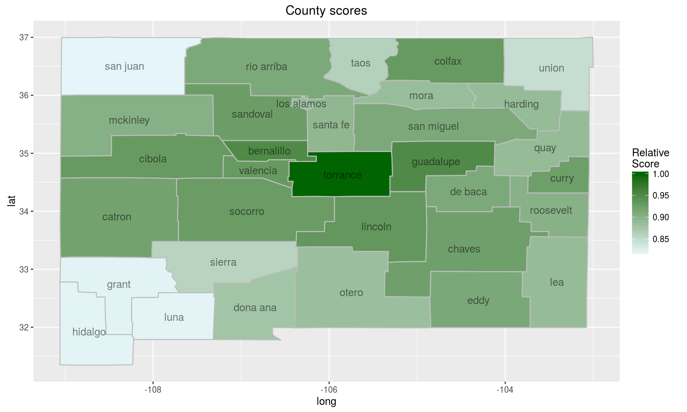

The Poisson distribution is a natural first option when dealing with (practically) unbounded count data. The scanstatistics package provides the function scan_poisson, which is an expectation-based scan statistic for univariate Poisson-distributed data proposed by Neill et al. (2005).
Theoretical motivation
For the expectation-based Poisson scan statistic, the null hypothesis of no anomaly states that at each location i and duration t, the observed count is Poisson-distributed with expected value μit:
for locations i = 1,…,m and durations t = 1,…,T, with T being the maximum duration considered. Under the alternative hypothesis, there is a space-time cluster W consisting of a spatial zone Z ⊂{1,…,m} and a time window D = {1,2,…,d} ⊆ {1,2,…,T} such that the counts in W have their expected values inflated by a factor qW > 1 compared to the null hypothesis:
For locations and durations outside of this window, counts are assumed to be distributed as under the null hypothesis. Calculating the scan statistic then involves three steps:
- For each space-time window W, find the maximum likelihood estimate of qW, treating all μit’s as constants.
- Plug the estimated qW into (the logarithm of) a likelihood ratio with the likelihood of the alternative hypothesis in the numerator and the likelihood under the null hypothesis (in which qW = 1) in the denominator, again for each W.
- Take the scan statistic as the maximum of these likelihood ratios, and the corresponding window W* as the most likely cluster (MLC).
Using the Poisson scan statistic
The first argument to scan_poisson should be a data table with columns ‘location’, ‘duration’, ‘count’ and ‘mu’. The latter two columns contain the observed counts and the estimated Poisson expected value parameters respectively, and the table holds data for the period in which we want to detect anomalies. Locations should be encoded as the integers 1, 2, …, which means that factor variables can be used for this purpose. The duration column counts time backwards, so that a duration of 1 is the most recent time interval, duration 2 is the second most recent, and so on.
We will create such a table by subsetting the NM_popcas table, which holds the population and the number of brain cancer cases for each year between 1973-1991 and each county of New Mexico. Note that the population numbers are (perhaps poorly) interpolated from the censuses conducted in 1973, 1982, and 1991.
data(NM_popcas)
tab <- NM_popcas[year >= 1986 & year < 1990, ]
tab[, duration := max(year) - year + 1]
#> year county population count duration
#> 1: 1986 bernalillo 463557.621 27 4
#> 2: 1987 bernalillo 470255.493 17 3
#> 3: 1988 bernalillo 476624.352 26 2
#> 4: 1989 bernalillo 482664.199 34 1
#> 5: 1986 catron 2647.822 1 4
#> ---
#> 124: 1989 union 4394.518 0 1
#> 125: 1986 valencia 66162.692 2 4
#> 126: 1987 valencia 67267.249 7 3
#> 127: 1988 valencia 68258.359 3 2
#> 128: 1989 valencia 69136.024 5 1
tab[, location := county]
#> year county population count duration location
#> 1: 1986 bernalillo 463557.621 27 4 bernalillo
#> 2: 1987 bernalillo 470255.493 17 3 bernalillo
#> 3: 1988 bernalillo 476624.352 26 2 bernalillo
#> 4: 1989 bernalillo 482664.199 34 1 bernalillo
#> 5: 1986 catron 2647.822 1 4 catron
#> ---
#> 124: 1989 union 4394.518 0 1 union
#> 125: 1986 valencia 66162.692 2 4 valencia
#> 126: 1987 valencia 67267.249 7 3 valencia
#> 127: 1988 valencia 68258.359 3 2 valencia
#> 128: 1989 valencia 69136.024 5 1 valencia
We still need to add the column ‘mu’, which should hold the predicted Poisson expected value parameter μit for each location i and time interval t. In this example we would like to detect a potential cluster of brain cancer in the counties of New Mexico during the years 1986-1989. Thus, we will use data from the years prior to 1986 to estimate the Poisson parameter for all counties in the years following. A simple generalized linear model (GLM) with a linear time trend and an offset for county population size will suffice to demonstrate the scan statistic. We fit such a model and create the needed column as follows:
mod_poisson <- glm(count ~ offset(log(population)) + 1 + I(year - 1985),
data = NM_popcas[year < 1986, ],
family = poisson(link = "log"))
# Add the expected value parameter column
tab[, mu := predict(mod_poisson, tab, type = "response")]
#> year county population count duration location mu
#> 1: 1986 bernalillo 463557.621 27 4 bernalillo 21.0264235
#> 2: 1987 bernalillo 470255.493 17 3 bernalillo 21.5392570
#> 3: 1988 bernalillo 476624.352 26 2 bernalillo 22.0449049
#> 4: 1989 bernalillo 482664.199 34 1 bernalillo 22.5430278
#> 5: 1986 catron 2647.822 1 4 catron 0.1201021
#> ---
#> 124: 1989 union 4394.518 0 1 union 0.2052477
#> 125: 1986 valencia 66162.692 2 4 valencia 3.0010612
#> 126: 1987 valencia 67267.249 7 3 valencia 3.0810625
#> 127: 1988 valencia 68258.359 3 2 valencia 3.1570964
#> 128: 1989 valencia 69136.024 5 1 valencia 3.2290261
We can now calculate the Poisson scan statistic. To give us more confidence in our detection results, we will perform 99 Monte Carlo replications, by which data is generated using the parameters from the null hypothesis and a new scan statistic calculated. This is then summarized in a p-value, calculated as the proportion of times the replicated scan statistics exceeded the observed one. The output of scan_poisson is an object of class “scanstatistic”, which comes with the print method seen below.
set.seed(1)
poisson_result <- scan_poisson(tab, zones, n_mcsim = 99)
print(poisson_result)
#> Data distribution: Poisson
#> Type of scan statistic: Expectation-based
#> Number of locations considered: 32
#> Maximum duration considered: 4
#> Number of spatial zones: 415
#> Number of Monte Carlo replicates: 99
#> p-value of observed statistic: 0.01
#> Most likely event duration: 4
#> ID of locations in most likely cluster: 15, 26
As we can see, the most likely cluster for an anomaly stretches from 1986-1989 and involves the locations numbered 15 and 26, which correspond to the counties
counties <- as.character(NM_geo$county)
counties[c(15, 26)]
[1] "losalamos" "santafe"
These are the same counties detected by Kulldorff et al. (1998), though their analysis was retrospective rather than prospective as ours was. Ours was also data dredging (adjective) as we used the same study period with hopes of detecting the same cluster.
A heuristic score for locations
We can score each county according to how likely it is to be part of a cluster in a heuristic fashion using the function score_locations, and visualize the results on a heatmap as follows:
# Calculate scores and add column with county names
county_scores <- score_locations(poisson_result)
county_scores[, county := counties]
#> location total_score n_zones score relative_score county
#> 1: 1 30062.410 139 54.06908 0.9512967 bernalillo
#> 2: 2 12337.993 59 52.27963 0.9198129 catron
#> 3: 3 22247.553 106 52.47064 0.9231736 chaves
#> 4: 4 15020.282 71 52.88832 0.9305222 colfax
#> 5: 5 18070.368 86 52.53014 0.9242204 curry
#> 6: 6 25488.059 123 51.80500 0.9114621 debaca
#> 7: 7 17942.878 90 49.84133 0.8769132 donaana
#> 8: 8 14521.233 70 51.86155 0.9124571 eddy
#> 9: 9 13619.132 73 46.64086 0.8206039 grant
#> 10: 10 32627.423 151 54.01891 0.9504140 guadalupe
#> 11: 11 23845.890 118 50.52095 0.8888706 harding
#> 12: 12 9134.199 49 46.60305 0.8199387 hidalgo
#> 13: 13 12943.823 64 50.56181 0.8895894 lea
#> 14: 14 28234.269 133 53.07193 0.9337528 lincoln
#> 15: 15 27404.101 136 50.37519 0.8863059 losalamos
#> 16: 16 12495.749 67 46.62593 0.8203411 luna
#> 17: 17 9849.241 48 51.29813 0.9025443 mckinley
#> 18: 18 30446.881 151 50.40874 0.8868963 mora
#> 19: 19 20494.649 102 50.23198 0.8837864 otero
#> 20: 20 22045.224 109 50.56244 0.8896005 quay
#> 21: 21 16585.640 80 51.83012 0.9119042 rioarriba
#> 22: 22 18028.939 88 51.21858 0.9011446 roosevelt
#> 23: 23 29277.047 139 52.65656 0.9264446 sandoval
#> 24: 24 8184.259 44 46.50147 0.8181513 sanjuan
#> 25: 25 34391.659 166 51.79467 0.9112804 sanmiguel
#> 26: 26 31509.455 155 50.82170 0.8941619 santafe
#> 27: 27 19901.759 102 48.77882 0.8582193 sierra
#> 28: 28 27013.809 128 52.76135 0.9282882 socorro
#> 29: 29 24312.210 124 49.01655 0.8624020 taos
#> 30: 30 36148.488 159 56.83725 1.0000000 torrance
#> 31: 31 10969.071 57 48.10996 0.8464513 union
#> 32: 32 28141.949 133 52.89840 0.9306996 valencia
#> location total_score n_zones score relative_score county
# Create a table for plotting
score_map_df <- merge(NM_map, county_scores, by = "county", all.x = TRUE)
score_map_df[subregion == "cibola",
relative_score := county_scores[county == "valencia", relative_score]]
#> county long lat group order region subregion
#> 1: bernalillo -106.2436 35.21972 1 1 new mexico bernalillo
#> 2: bernalillo -106.2436 35.02491 1 2 new mexico bernalillo
#> 3: bernalillo -106.2436 35.02491 1 3 new mexico bernalillo
#> 4: bernalillo -106.2436 34.95043 1 4 new mexico bernalillo
#> 5: bernalillo -106.1462 34.95043 1 5 new mexico bernalillo
#> ---
#> 863: valencia -106.4097 34.51498 33 895 new mexico valencia
#> 864: valencia -106.4212 34.41185 33 896 new mexico valencia
#> 865: valencia -106.4498 34.41185 33 897 new mexico valencia
#> 866: valencia -106.7592 34.57227 33 898 new mexico valencia
#> 867: valencia -107.2061 34.57227 33 899 new mexico valencia
#> location total_score n_zones score relative_score
#> 1: 1 30062.41 139 54.06908 0.9512967
#> 2: 1 30062.41 139 54.06908 0.9512967
#> 3: 1 30062.41 139 54.06908 0.9512967
#> 4: 1 30062.41 139 54.06908 0.9512967
#> 5: 1 30062.41 139 54.06908 0.9512967
#> ---
#> 863: 32 28141.95 133 52.89840 0.9306996
#> 864: 32 28141.95 133 52.89840 0.9306996
#> 865: 32 28141.95 133 52.89840 0.9306996
#> 866: 32 28141.95 133 52.89840 0.9306996
#> 867: 32 28141.95 133 52.89840 0.9306996
ggplot() +
geom_polygon(data = score_map_df,
mapping = aes(x = long, y = lat, group = group,
fill = relative_score),
color = "grey") +
scale_fill_gradient(low = "#e5f5f9", high = "darkgreen",
guide = guide_colorbar(title = "Relative\nScore")) +
geom_text(data = centroids,
mapping = aes(x = long, y = lat, label = subregion),
alpha = 0.5) +
ggtitle("County scores")

As we can see, this does not match up entirely with the previous results as Torrance was not part of the most likely cluster.
Finding the top-scoring clusters
Finally, if we want to know not just the most likely cluster, but say the five top-scoring space-time clusters, we can use the function top_clusters. The clusters returned can either be overlapping or non-overlapping in the spatial dimension, according to our liking.
top5 <- top_clusters(poisson_result, k = 5, overlapping = FALSE)
# Find the counties corresponding to the spatial zones of the 5 clusters.
top_counties <- top5$zone %>%
purrr::map(get_zone, zones = zones) %>%
purrr::map(function(x) counties[x])
# Add the counties corresponding to the zones as a column
top5[, counties := top_counties]
#> zone duration statistic
#> 1: 49 4 9.1806711
#> 2: 3 2 6.8196550
#> 3: 140 4 3.5377879
#> 4: 10 4 3.4072029
#> 5: 9 2 0.8372729
#> counties
#> 1: losalamos,santafe
#> 2: chaves
#> 3: bernalillo,lincoln,sierra,socorro,torrance,valencia
#> 4: guadalupe
#> 5: grant
To get p-values for these clusters, the values of the cluster-specific statistics in the table above can be compared to the replicate scan statistics calculated earlier. These p-values will be conservative, since secondary clusters from the original data are compared to the most likely clusters from the replicate data sets.
top5[, pvalue := mc_pvalue(statistic, poisson_result$replicated)]
#> zone duration statistic
#> 1: 49 4 9.1806711
#> 2: 3 2 6.8196550
#> 3: 140 4 3.5377879
#> 4: 10 4 3.4072029
#> 5: 9 2 0.8372729
#> counties pvalue
#> 1: losalamos,santafe 0.01
#> 2: chaves 0.01
#> 3: bernalillo,lincoln,sierra,socorro,torrance,valencia 0.48
#> 4: guadalupe 0.50
#> 5: grant 1.00
top5
#> zone duration statistic
#> 1: 49 4 9.1806711
#> 2: 3 2 6.8196550
#> 3: 140 4 3.5377879
#> 4: 10 4 3.4072029
#> 5: 9 2 0.8372729
#> counties pvalue
#> 1: losalamos,santafe 0.01
#> 2: chaves 0.01
#> 3: bernalillo,lincoln,sierra,socorro,torrance,valencia 0.48
#> 4: guadalupe 0.50
#> 5: grant 1.00